Presenter speaking guide
Trust, Transparency, and AI
Slide thumbnails and what to say. Adjust the text to suit your phone or tablet.
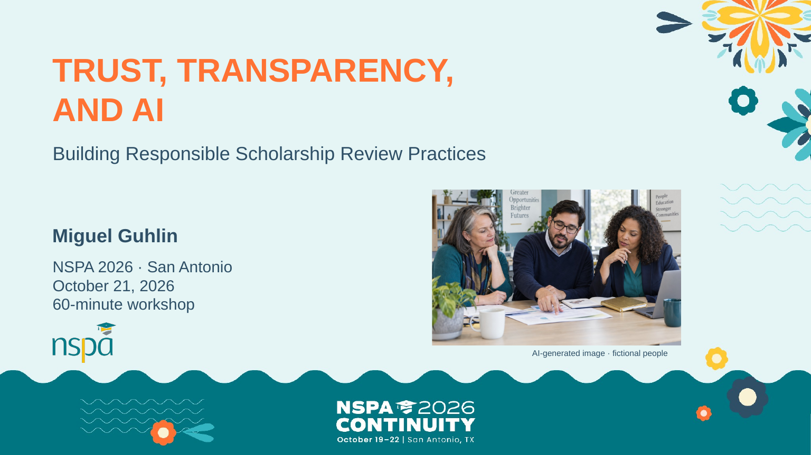
Arrival and resource screen
01. Session resources
Welcome. The QR code takes you back to the workshop resources. You can download the workbook, presentation, and takeaways now or return to them later. The companion also lets you keep your own notes. We will use fictional examples today, so you do not need an applicant record or an AI account. Keep the workbook or a blank page nearby, and find someone you can talk with during the activities.
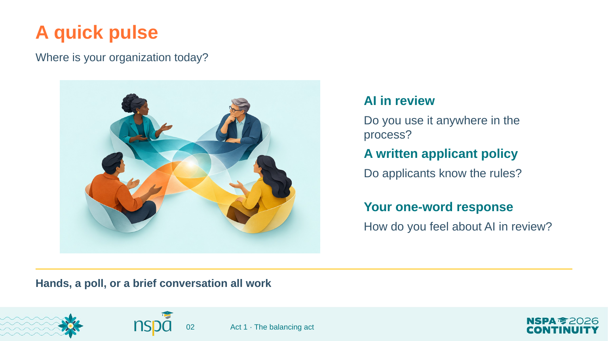
Welcome · 1 minute
02. Trust, Transparency, and AI
Today we will look at where AI can help a scholarship team and where a person needs to remain responsible. By the end, I want you to have one limited task to test, a specific evidence check, and policy language your team can discuss. Our cases, rubric, and sample outputs are fictional teaching examples. We have a 60-minute core with 30 more minutes available for practice and discussion. You can participate on paper or in the companion. You do not need to run a live AI tool.
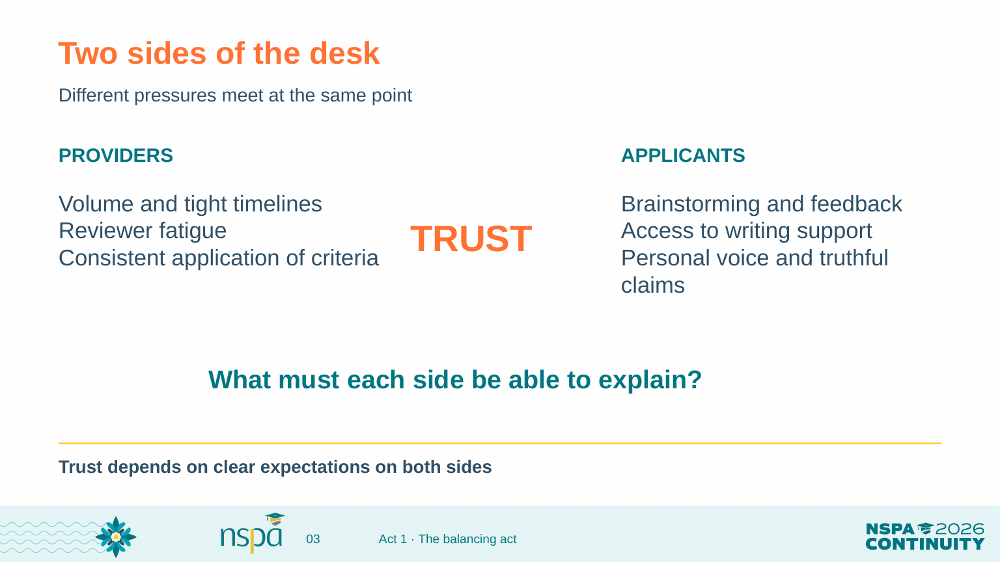
Activity 1 · 2 minutes · Individual vote, then pairs
03. Your first judgment
Start with your own judgment. Which task gives AI the most influence over who receives an award: flagging a missing transcript, summarizing leadership evidence, or ranking finalists? Choose A, B, or C, then tell a partner what could go wrong. I will take two responses. Ranking finalists puts the model closest to the award decision. A summary can also change a decision by leaving out evidence or adding a claim. Even a missing-document flag needs a person to check the actual requirements and exceptions. What would you need to verify before acting?
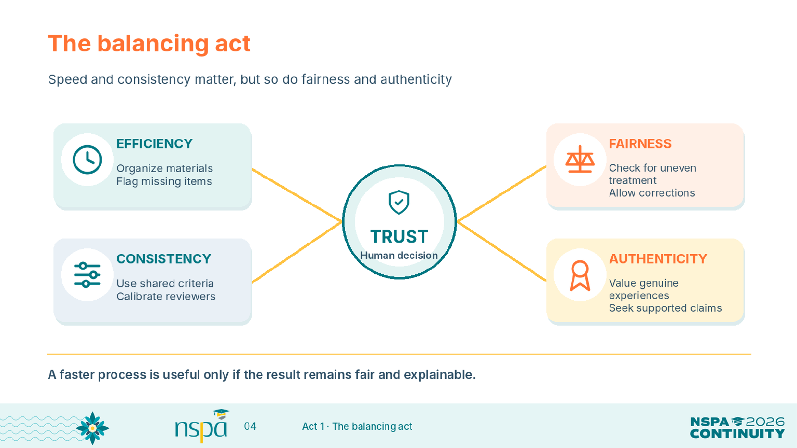
Discuss · 2 minutes
04. AI authority in the review process
Here is a boundary we can discuss for local practice. AI may assist with organizing files and inventories. When it maps quotations to a rubric, someone needs to check the source and the match. People remain responsible for awards, exceptions, and appeals. This is a suggested workshop boundary that your organization can adapt to its requirements. The question is who has authority to approve the work, correct an error, and stop the process. Keep those responsibilities in mind as we sort some tasks.
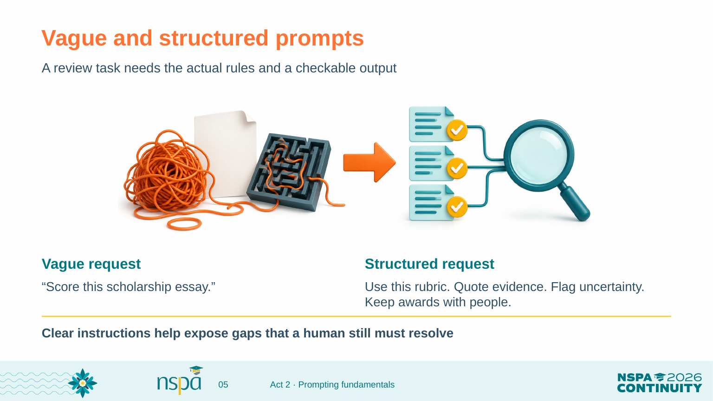
Activity 2 · 3 minutes · Pairs
05. Task sorting with a safeguard
With a partner, assign each task to ASSIST, CHECK, or HUMAN. Then add a safeguard that someone could actually carry out. You have two minutes, and we will use the last minute to compare one choice you debated. A missing-reference list may fit ASSIST, with staff confirming requirements and exceptions. Linking a quote to a criterion needs CHECK, including the exact wording and location. A deadline waiver and recipient selection need a human decision. A stricter category can make sense if you can explain it. I am listening for a concrete safeguard and an owner.
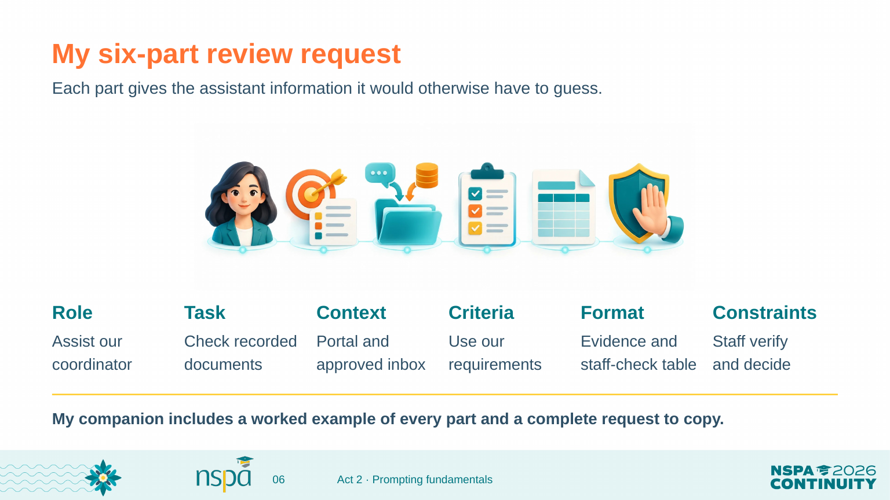
Discuss · 3 minutes
06. Two gates before an upload
Before anything is uploaded, we need two conditions. First, the organization approves the service, the task, and the information involved. Check access, retention, reuse, and how an exposure would be reported. Second, supply only what the task needs. For a rubric check, that may mean an application code, a relevant excerpt, a criterion, and a source pointer. A home address or full birth date usually adds nothing to that task. Removing a name does not guarantee anonymity or make an unapproved tool acceptable. We will keep our workshop examples fictional.
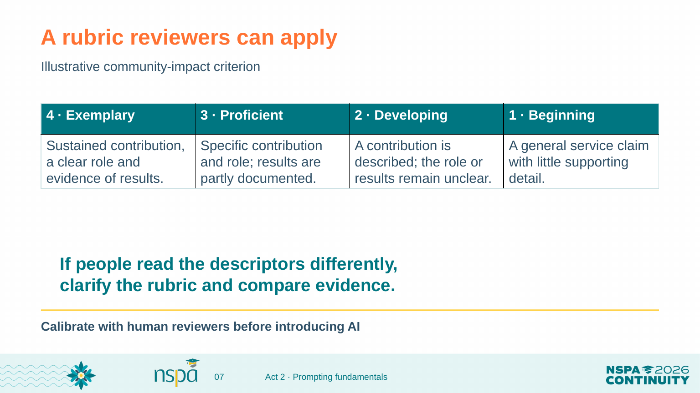
Resource reminder
07. Session resources
Here is the resource link again. If you have just joined us, scan the QR code and open the workbook or companion. Keep any real applicant information out of the practice. We are moving from deciding what AI may do to writing a request whose result a reviewer can check.
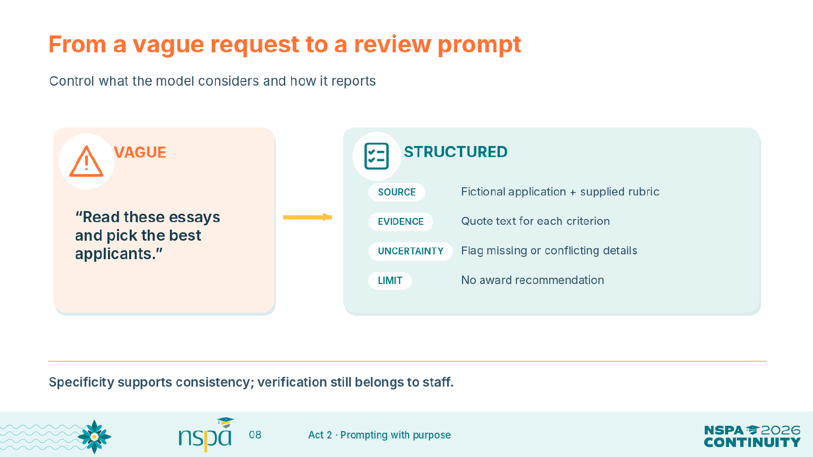
Discuss · 2 minutes
08. A prompt reviewers can check
A checkable prompt makes four things visible: the task, the source, the evidence requirement, and the limit on AI authority. Use one excerpt and one published criterion. Supply the actual rubric and ask for an exact quote, a location, and any missing evidence. State that the tool must not infer personal traits, rank applicants, or recommend awards. Those instructions help us inspect the response, but they do not guarantee it will be correct. A person still checks the source. The take-home prompt gives you a fuller version to adapt later.
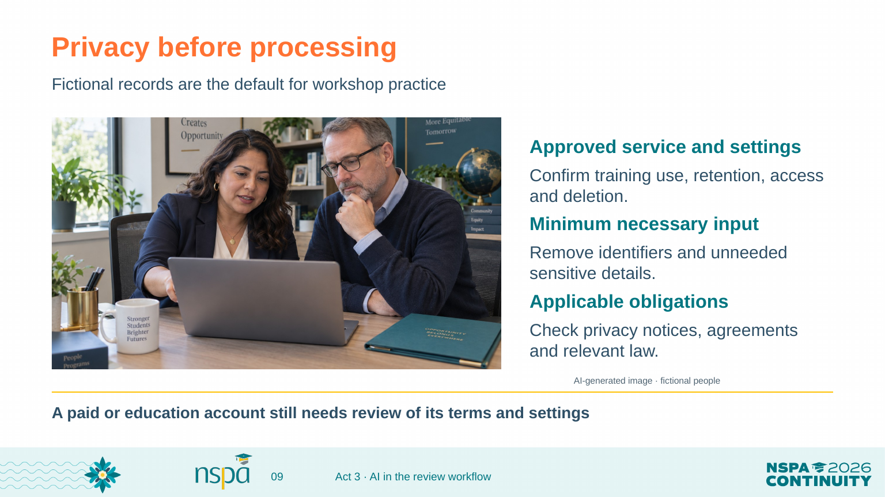
Activity 3 · 4 minutes · Pairs
09. A prompt repair lab
Here is our weak request: Review all applications and choose the strongest students. With your partner, replace it with something a reviewer could inspect. Name one criterion and the text it comes from. Ask for a quote and a gap. Limit what AI may decide. Use the fictional community-engagement rubric in your workbook, or a criterion you can state precisely. Take two minutes to write, then exchange with another pair for one minute. Could you verify every requested output? We will finish with one useful repair. Keep real application information out of this exercise.
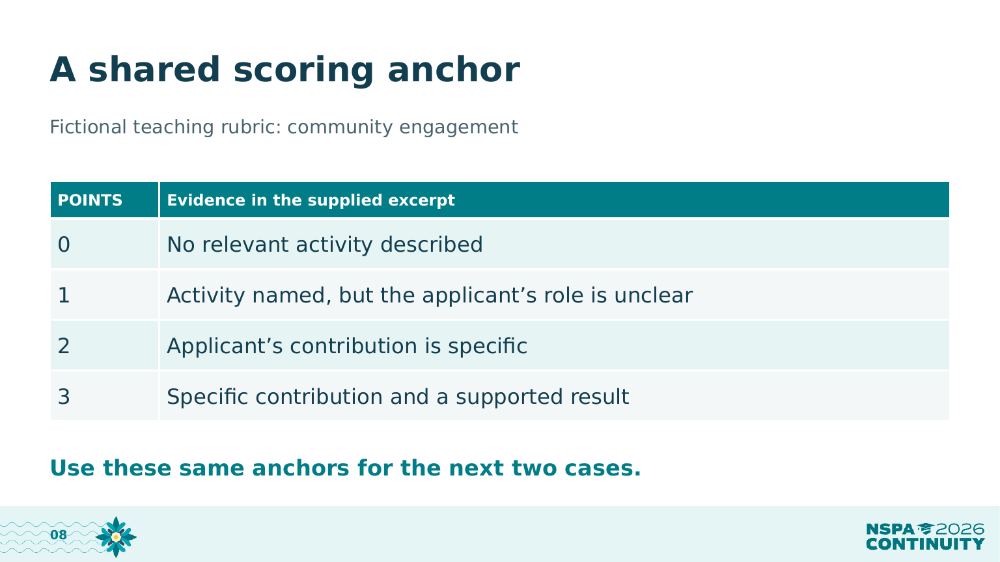
Introduce the rubric · 2 minutes
10. A shared scoring anchor
For the next two cases, we all need the same anchor. This is an invented teaching rubric. Zero means no relevant activity appears. One means an activity is named but the applicant's role is unclear. Two means the contribution is specific. Three requires a specific contribution and a supported result. To choose three, we must actually find evidence of a result. Smooth writing or a prestigious activity does not supply that missing evidence. A statement in an application is still applicant-reported. Real scholarship programs should use their own published criteria and anchors.
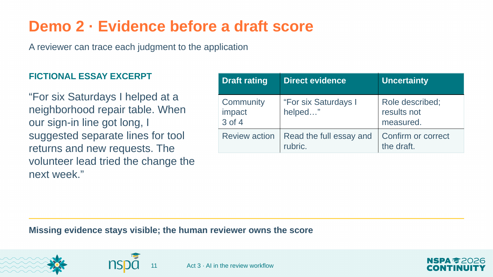
Activity 4 · 5 minutes · Pairs
11. An evidence audit
Read A17, paragraph two, and the sample AI summary. Take one quiet minute to mark what the excerpt supports. Then compare with your partner, rewrite the summary, and choose an anchor. We will debrief after five minutes. The source supports organizing twelve weekend tutoring sessions and recruiting two volunteers. It does not establish founding a program, serving 120 students, or improving grades by twenty percent. Strong leadership is also an unsupported trait judgment here. Under our teaching anchor, two out of three fits the specific contribution. What evidence would show the result of those sessions?
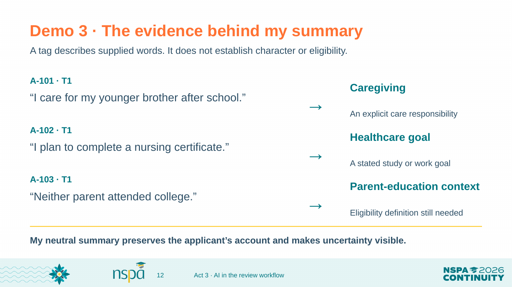
Debrief · 3 minutes
12. A reviewable handoff
Here is a handoff someone else can inspect. It keeps a quotation, the source location, and an unanswered question together. Our provisional reading is two out of three because the role is specific and result evidence is missing. That is a reading of an applicant-reported excerpt, not independent verification of the event or an award recommendation. The full quotation also mentions recruiting two volunteers. A reviewer should be able to return to paragraph two and see that. Which part of this record would help the next person catch an error?
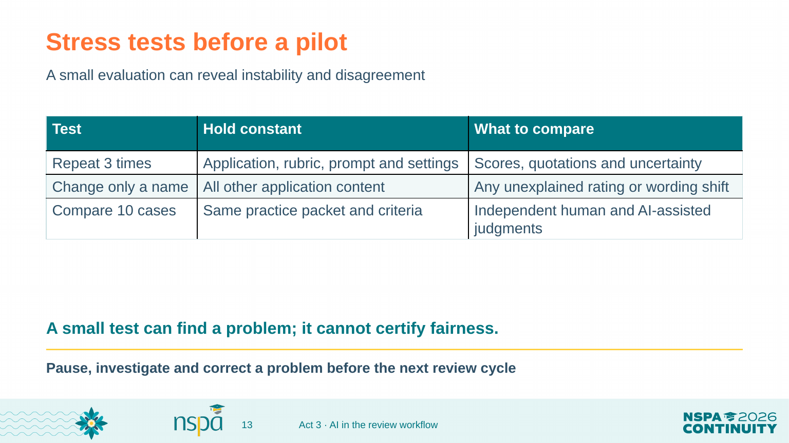
Activity 5 · 4 minutes · Individual, then pairs
13. A fairness calibration
Score A and B independently using the same anchor. Then compare with your partner. Did your scores differ, and which evidence explains the difference? Both describe coordinating twelve tutoring sessions and recruiting two volunteers. Neither supplies evidence of a result. Under this teaching rubric, both support two out of three. If we scored them differently because of vocabulary or polish, we need to examine that judgment. This one exercise does not establish that a workflow is fair. It shows why we should test varied fictional cases, compare omissions and judgments, correct the process, and retest.
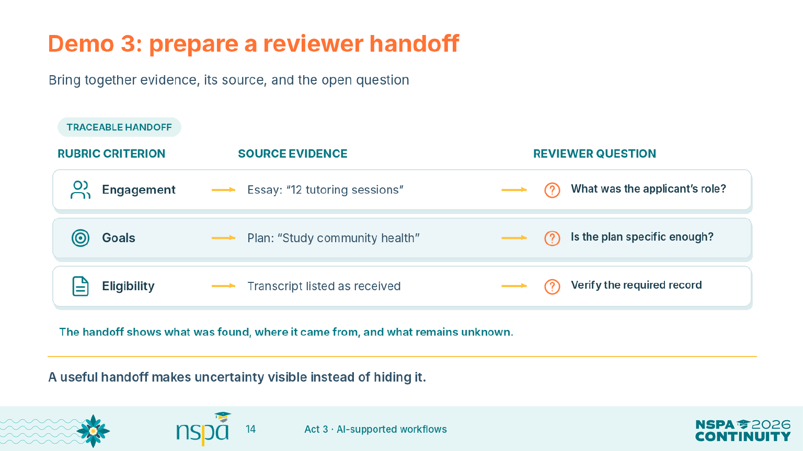
Discuss · 2 minutes
14. The review path and its owners
Now put an owner at each step. Staff receive the materials and check requirements and exceptions. They confirm approval and minimize the data. Approved assistance may organize files and map quotations. A reviewer verifies that work and corrects the record. The committee then makes the decision, records reasons, and keeps a reconsideration route. At each handoff, ask who can correct an error. When you return to your team, replace the general word staff with the actual role responsible for that step.
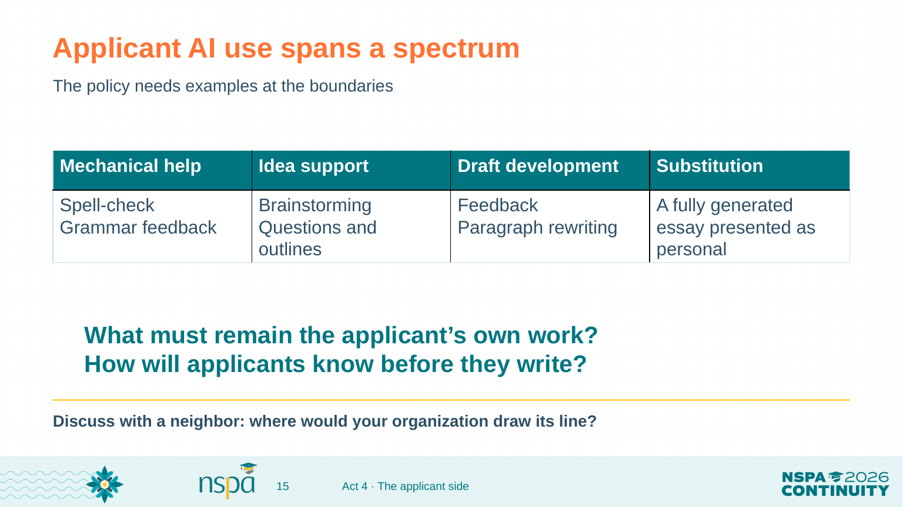
Activity 6 · 4 minutes · Small groups
15. Applicant use boundary sort
In a small group, sort four applicant uses: permit, prohibit, or needs a clearer local rule. Proofreading a truthful draft and translating an applicant's own statement may be allowed under your policy. Inventing an achievement conflicts with truthful claims. Drafting most of an essay from truthful notes raises a separate question about authorship assistance. Decide what your proposed policy would require applicants to disclose. There is no universal disclosure rule in this exercise. Use two minutes to sort, one to decide disclosure, and one to share. Mark any choice your organization still needs to resolve.
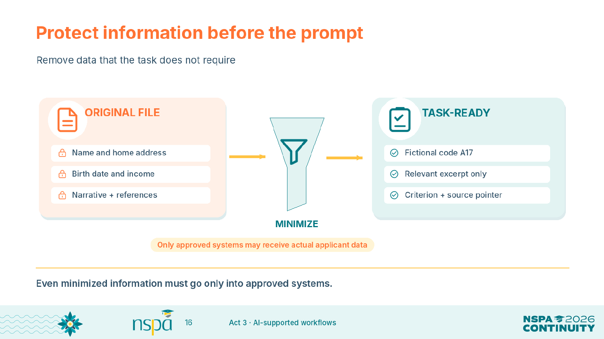
Discuss · 2 minutes
16. What an AI detector can get wrong
A detector can flag human-written text, and it can miss AI-generated text. These are possible classification errors, not measured rates shown by this illustration. A flag by itself cannot establish authorship or a policy violation. An unflagged result cannot prove authorship either. Turnitin's guidance cautions that its report should not be the sole basis for adverse action against a student. Here we are applying that caution to a suggested scholarship-review practice. Return to the actual evidence and the published rule before deciding what to do.
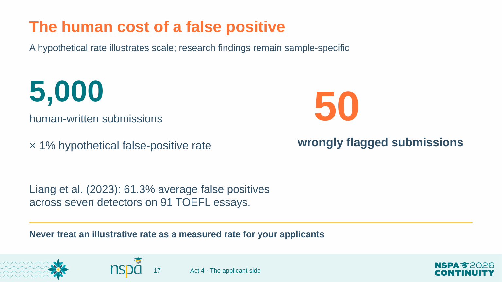
Activity 7 · 4 minutes · Groups of three
17. A flagged essay case conference
Form a group of three: reviewer, applicant, and policy observer. In this fictional case, a detector flags the essay, while activities and references agree. The published rule allows proofreading and requires truthful claims. It says nothing about translation or disclosure. Decide the next action, the evidence needed, and one neutral question. You have thirty seconds to read, two minutes to discuss, and ninety seconds to report. A question could be: Can you describe the help you used and how you checked the claims? Do not assume misconduct or add a disclosure requirement after submission.
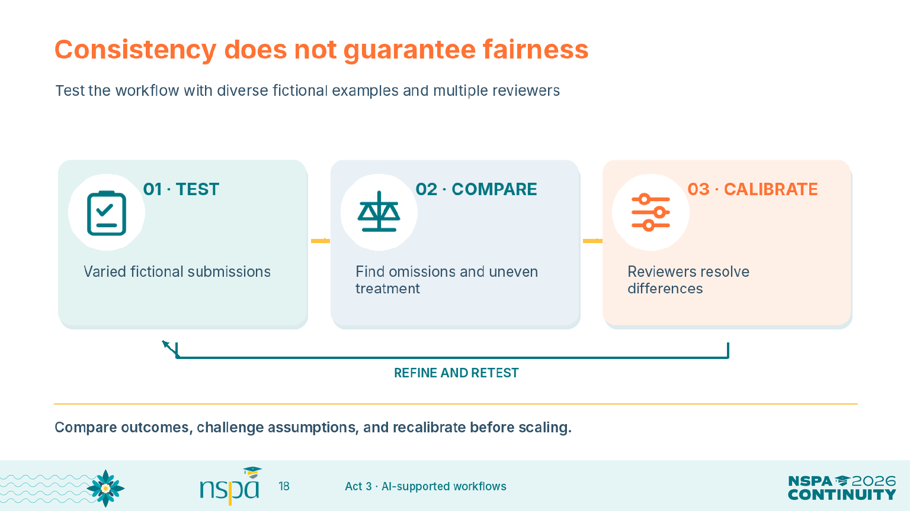
Debrief · 2 minutes
18. A documented response to a concern
Our suggested response starts by pausing automatic penalties. Check the source evidence and the rule that applicants could read. Invite clarification when appropriate, and record the human decision with its reasons and reconsideration route. Someone needs authority to correct a mistaken record. Use consistent, proportionate steps across cases. The detector score does not decide the outcome. What would your team need to document so another person could understand both the concern and the reason for the response?
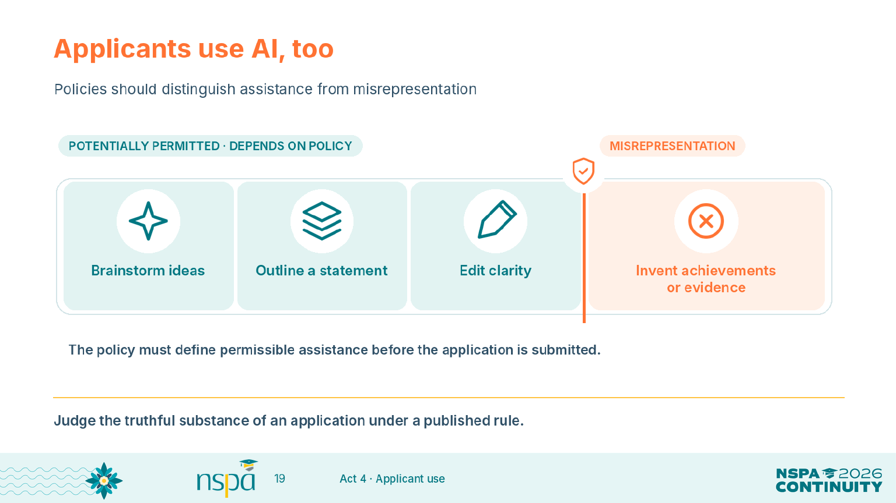
Discuss · 2 minutes
19. Policy language people can use
The first rule leaves applicants guessing about what counts as AI-generated. The more specific example names brainstorming, outlining, and proofreading. It asks applicants to write their own statement, verify claims, and disclose the tool and type of help. It also explains human review and reconsideration. This is illustrative language for local adaptation. Your organization still needs to decide about translation, where disclosure goes, who handles questions, and which deadlines apply. Publish those choices before applications open. We will now turn them into sentences someone can use.
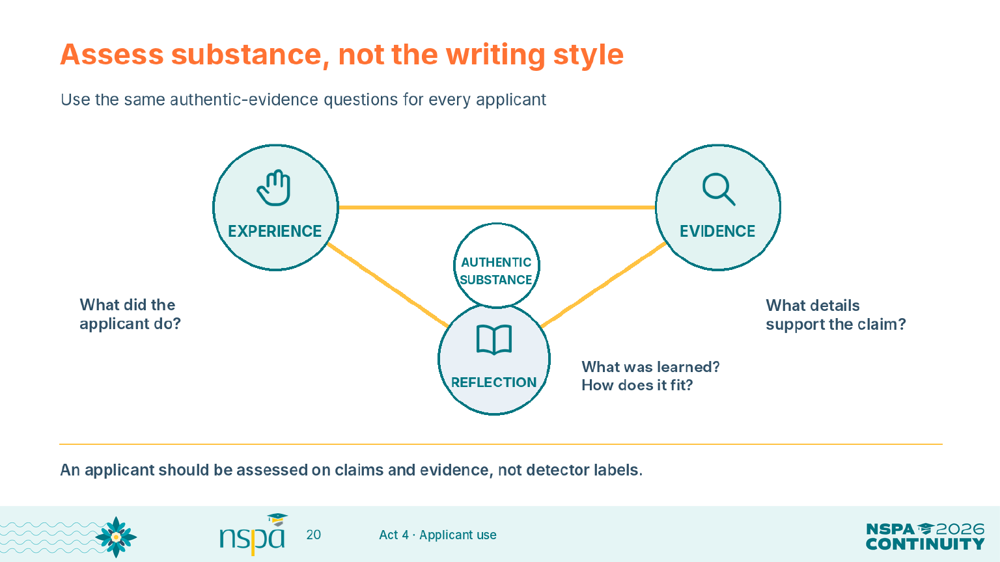
Activity 8 · 6 minutes · Small groups
20. A policy drafting lab
Write three sentences with your group. For applicants, name allowed help, truthful work, and disclosure. For reviewers, name the approved task and service, the evidence check, and the owner. For concerns, explain evidence review, clarification, and reconsideration. Spend three minutes writing, then two minutes exchanging and revising with another group. We will use the last minute to hear one useful example. Mark one unresolved local choice. The next three slides offer samples for comparison. Ask whether a new applicant or staff member could act on your sentence without guessing.
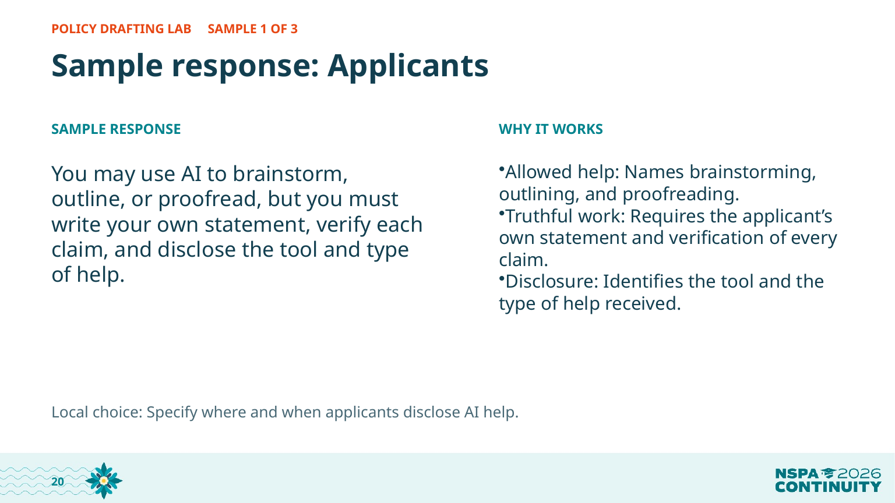
Activity 8 sample · Within the policy discussion
21. Sample response for applicants
Here is one applicant example. You may use AI to brainstorm, outline, or proofread, but you must write your own statement, verify each claim, and disclose the tool and type of help. It names the assistance, keeps responsibility for the statement and claims with the applicant, and explains what disclosure includes. Your organization still needs to say where and when that disclosure happens. Compare this with your sentence. Which choice would you need to make before publishing it?
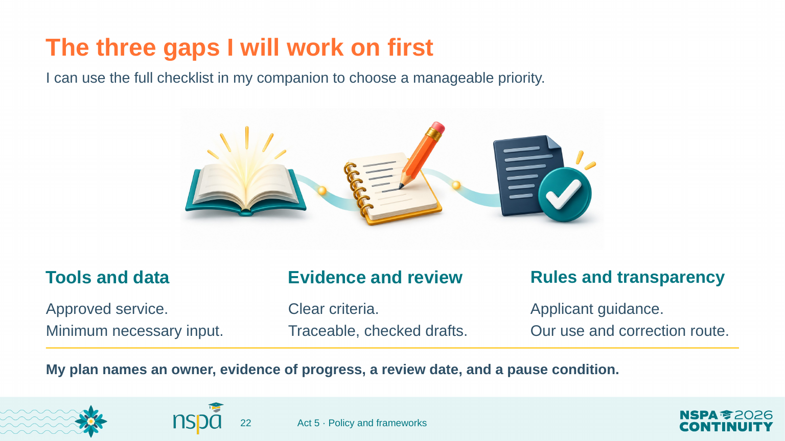
Activity 8 sample · Within the policy discussion
22. Sample response for reviewers
This reviewer example limits assistance to evidence extraction in an approved service. It gives the assigned reviewer responsibility for checking every quote and source before the committee acts. Those details make the rule usable: a task, a service boundary, a check, and an owner. Your team still needs to name the actual service and assign the reviewer. If a quotation or source cannot be verified, the committee should not rely on it. What would make that responsibility clear in your own process?
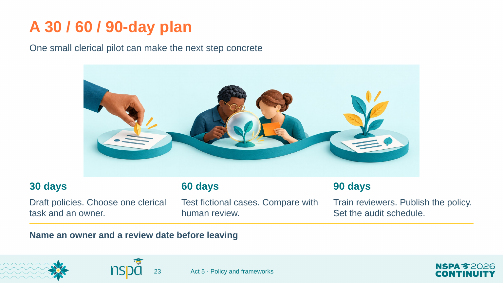
Activity 8 sample · Within the policy discussion
23. Sample response for concerns
For concerns, the sample starts with the evidence and the published rule. It allows clarification when appropriate and gives a contact for reconsideration. That makes the next step visible to both staff and applicants. Your organization needs to fill in the contact, review steps, and response timeline. Compare your draft with this example. Could a person tell how to raise a question, what staff would check, and how to request another review?
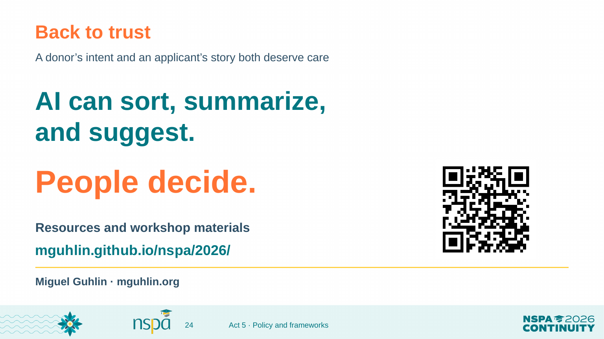
Discuss · 2 minutes
24. A four-week pilot
Here is an illustrative four-week pilot. In week one, choose one limited task and one owner. In week two, test fictional cases and log errors. In week three, compare the results, correct the workflow, and retest. In week four, decide whether to proceed, revise, or stop. Agree on success criteria before the test. Faster work with unacceptable errors is not ready to advance. Before any real applicant information is used, confirm approval for the service and data, verification ownership, retention, and readiness of the published rules.
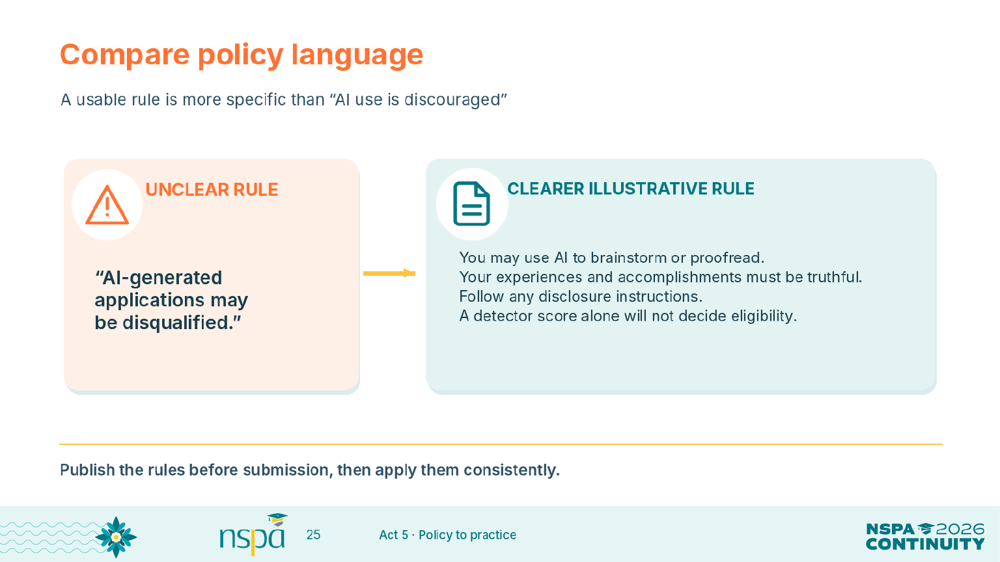
Activity 9 · 2 minutes · Individual, then pairs
25. Your next review-cycle decision
Write a commitment a colleague could follow. Name one task you will test, the specific check a person must perform, and who will do it by what date. Take one minute to write and one to share with a partner. If a pilot is premature, clarifying a published rule or identifying the service owner is a valid next task. Take your three policy sentences back to your team. What evidence would help you trust the process enough to continue, and what error would make you pause?
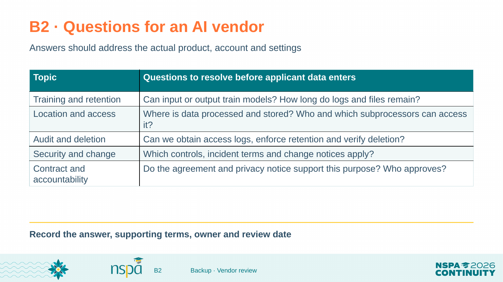
Take-home reference
26. Take-home review prompt
This take-home prompt is a starting point. Supply the excerpt, the published criterion and anchors, an application code, and a source pointer. Ask for an exact quote, its location, missing evidence, and a neutral follow-up question. If the evidence is absent, the response should say not provided. Keep the boundary explicit: no invented facts, trait inferences, rankings, or award recommendations. A person verifies each finding before it is used. Use fictional information for practice and your organization's authorized service and information for any approved work.
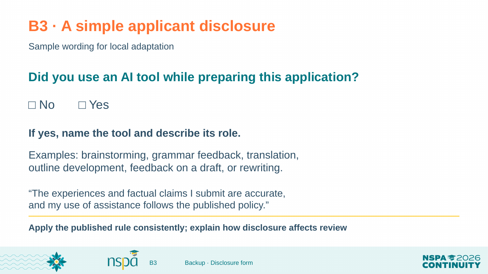
Take-home reference
27. Resources for your team
These are starting points for a local discussion. The NIST Generative AI Profile is a voluntary risk-management resource. Turnitin explains its writing report and the need for human judgment about possible misclassification. Pair these references with your organization's published rules and approved-tool requirements. Our cases, sample summary, rubric, policy language, and four-week plan are teaching examples. Use them with the colleagues who own the actual process, and adapt them before any real use.
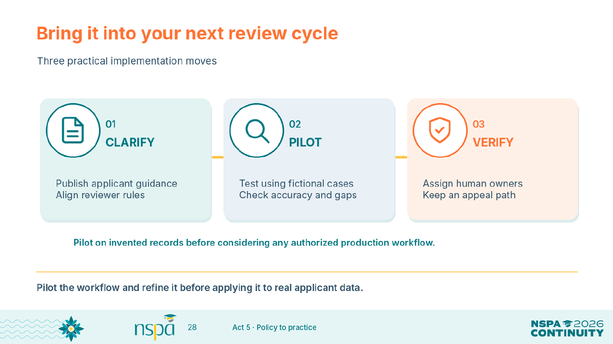
Closing resource screen
28. Session resources
Scan the QR code to return to the handouts, or save the workshop address now. You can keep the workbook, presentation, takeaways, and your companion notes. Before you leave, share your next task and human check with a colleague. Bring the unresolved policy choices back to the people who can decide them. Thank you for working through the evidence and the decisions together.